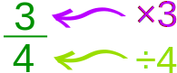
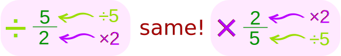

Dividing Fractions
Turn the second fraction upside down, then multiply.
There are 3 Simple Steps to Divide Fractions:
|
Step 1. Turn the second fraction (the one you want to divide by) upside down Step 2. Multiply the first fraction by that reciprocal |
Example:
Example:
1 2 ÷ 1 6
Step 1. Turn the second fraction upside down (it becomes a reciprocal):
1 6 becomes 6 1
Step 2. Multiply the first fraction by that reciprocal:
(multiply tops ...)
1 2 × 6 1 = 1 × 6 2 × 1 = 6 2
(... multiply bottoms)
Step 3. Simplify the fraction:
6 2 = 3
With Pen and Paper
And here is how to do it with a pen and paper (press the play button):
To help you remember:
♫ "Dividing fractions, as easy as pie,
Flip the second fraction, then multiply.
And don't forget to simplify,
Before it's time to say goodbye" ♫
|
Another way to remember is: "leave me, change me, turn me over" |
 |
How Many?
20 divided by 5 is asking "how many 5s in 20?" (=4) and so:
1 2 ÷ 1 6 is really asking:
how many 1 6 s in 1 2 ?
Now look at the pizzas below ... how many "1/6th slices" fit into a "1/2 slice"?
| How many |  |
in |  |
? | Answer: 3 |
So now you can see why 1 2 ÷ 1 6 = 3
In other words "I have half a pizza, if I divide it into one-sixth slices, how many slices is that?"
Another Example:
1 8 ÷ 1 4
Step 1. Turn the second fraction upside down (the reciprocal):
1 4 becomes 4 1
Step 2. Multiply the first fraction by that reciprocal:
1 8 × 4 1 = 1 × 4 8 × 1 = 4 8
Step 3. Simplify the fraction:
4 8 = 1 2
Fractions and Whole Numbers
What about division with fractions and whole numbers?
Make the whole number a fraction, by putting it over 1.
Example: 5 is also 5 1
Then continue as before.
Example:
2 3 ÷ 5
Make 5 into 5 1 :
2 3 ÷ 5 1
Then continue as before.
Step 1. Turn the second fraction upside down (the reciprocal):
5 1 becomes 1 5
Step 2. Multiply the first fraction by that reciprocal:
2 3 × 1 5 = 2 × 1 3 × 5 = 2 15
Step 3. Simplify the fraction:
The fraction is already as simple as it can be.
Answer = 2 15
Example:
3 ÷ 1 4
Make 3 into 3 1 :
3 1 ÷ 1 4
Then continue as before.
Step 1. Turn the second fraction upside down (the reciprocal):
1 4 becomes 4 1
Step 2. Multiply the first fraction by that reciprocal:
3 1 × 4 1 = 3 × 4 1 × 1 = 12 1
Step 3. Simplify the fraction:
12 1 = 12
And Remember ...
You can rewrite a question like "20 divided by 5" into "how many 5s in 20"
So you can also rewrite "3 divided by ¼" into "how many ¼s in 3" (=12)
Why Turn the Fraction Upside Down?
Because dividing is the opposite of multiplying!
| A fraction says to: | ||
|
 |
But for DIVISION we:
- divide by the top number
- multiply by the bottom number
Example: dividing by 5/2 is the same as multiplying by 2/5

So instead of dividing by a fraction, it is easier to turn that fraction upside down, then do a multiply.